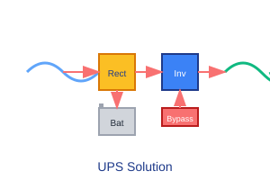

Uninterruptible power supply applications demand exceptional reliability, efficiency, and fast response to power disturbances. Semikron's UPS solutions are designed to provide continuous power protection for critical loads in data centers, hospitals, telecommunications, and manufacturing facilities. Our components address the specific requirements of various UPS topologies including on-line double conversion, line interactive, and standby systems. With extensive experience in UPS applications, we provide complete solutions from thyristor-based static bypass systems to high-frequency IGBT inverter stages. Our products are engineered to handle the continuous operation, switching stress, and thermal cycling common in UPS applications, ensuring maximum uptime for critical systems.
Components designed for 24/7 operation with long MTBF
Rapid switchover for power protection
Solutions for all common UPS configurations
Typical power electronics configuration for UPS applications

The input rectifier converts AC line power to DC for the inverter and battery charger. For higher efficiency, active rectifier topologies with power factor correction may be implemented using IGBT modules. The rectifier must handle line voltage variations and provide stable DC power.
The DC/AC inverter converts battery or rectifier DC power to clean AC output power. This stage must provide precise voltage regulation, fast transient response, and low total harmonic distortion (THD) to meet critical load requirements.
The static bypass provides immediate transfer to utility power during inverter malfunction. This is typically implemented with thyristors for high reliability and fast switching capability. The bypass must seamlessly transfer without interruption to critical loads.
Optimal Semikron components for UPS applications
High-reliability for static bypass applications
Voltage: 1200V - 2500V
Current: 100A - 1000A
Topology: Single, Phase Leg
High-efficiency IGBTs for inverter stages
Voltage: 1200V - 1700V
Current: 100A - 450A
Technology: IGBT4 with low losses
Key factors for UPS electronics design
UPS systems must operate continuously with minimal failure probability. Power semiconductors must be conservatively rated and derated for long-term reliability. Semikron's components are designed with robust process technology and validated for extended life under continuous operation.
UPS systems operate continuously, making efficiency critical for operating costs. The power semiconductors must maintain high efficiency across various load conditions, from light loads during low-demand periods to full loads during peak operation.
UPS systems must respond rapidly to power disturbances. Semikron's thyristors provide fast, reliable switching for static bypass applications, while IGBTs offer fast control for inverter stages. Fast response is critical to maintain power quality for sensitive loads.
Continuous operation requires effective thermal management to maintain semiconductor junction temperatures within safe limits. The thermal design must account for both steady-state operation and overload conditions while maintaining system reliability.
Technical resources for UPS designs
Implementation of Semikron solutions in critical power infrastructure
The data center required high-efficiency UPS systems to support critical computing infrastructure with 99.999% availability (5.26 minutes of downtime per year). The system needed to handle high power density loads with minimal space and operating costs.
Semikron SEMiX modules were selected for their high efficiency and reliability in the inverter stage. SEMIPACK thyristors were used for static bypass applications to provide fast, reliable switchover capability.
The installation achieved 96.5% efficiency at 50% load and 97.2% at 100% load. Over three years of operation, there were zero power semiconductor failures, contributing to the required availability target.
Essential components for UPS power systems
Comprehensive documentation for UPS designs
Our FAE team specializes in critical power electronics applications
Contact Power Experts
FAE Technical Commentary
Expert insights on UPS applications
For static bypass applications, we recommend SEMIPACK thyristors with their proven reliability and fast switching capability. The thyristor's latching behavior provides robust bypass operation without the need for continuous gate drive during conduction.
When designing for high efficiency, utilize Semikron's latest IGBT technology with optimized VCEsat and switching characteristics. The balance between conduction and switching losses is particularly important for UPS systems that operate continuously at partial load.
For critical applications, implement redundant power semiconductors in parallel for N+1 reliability. Semikron's components are well-matched for parallel operation, simplifying redundant system design.